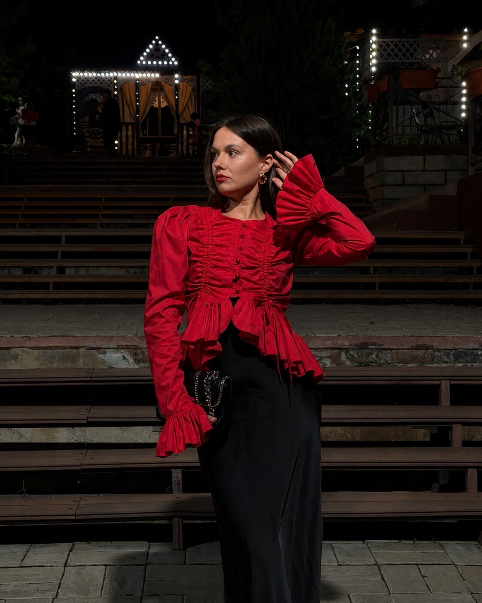

3 666 ₽
Прогноз на месяц
Общий фон, важные периоды, риски, возможности и рекомендации по ключевым сферам.
Если нужен ответ и ориентир сейчас — выбирай личный разбор. Если хочется освоить систему — переходи в обучение.

Короткий период, личный год, конкретная тема или вся натальная карта — это разные объёмы работы.
Напишите Лизе название формата и свой запрос. Она уточнит, подходит ли он под ситуацию.
Общий фон, важные периоды, риски, возможности и рекомендации по ключевым сферам.
Прогноз на личный год: основные темы, периоды роста, возможные сложности и ключевые сферы.
Какие темы активируются, где возможно напряжение и что важно не игнорировать в периоде.
Личность, внутренние сценарии, сильные стороны, отношения, финансы, реализация и жизненный путь.
Глубокий разбор одного актуального запроса: сценарии, перспективы, повторяющиеся паттерны и варианты действий.
Живой индивидуальный формат для разбора вашего запроса. Место и детали уточняются при записи.
Обучение начинается с натальной базы и может вести к астропсихологии, прогностике и профессиональной практике.
Точные данные помогают Лизе работать с картой, а контекст — не превращать интерпретацию в гадание вслепую.
Астрологический разбор не является научно подтверждённой диагностикой и не заменяет медицинскую, психологическую, юридическую или финансовую помощь.
Решения после консультации вы принимаете самостоятельно.
Не нужно формулировать идеально — достаточно коротко рассказать, что происходит.
Выбрать разбор